テーマ決め
今回の作品制作は「感動するもの」がテーマなので、先月亡くなった家族のトイプードルの骨壺と一緒に置く写真立てを制作してみることにしました。
写真立てを作る際の手順
まずは写真立てのサイズを決めていきます。今回は124mm×94mmで制作していきます。
大まかな形をスケッチで決める
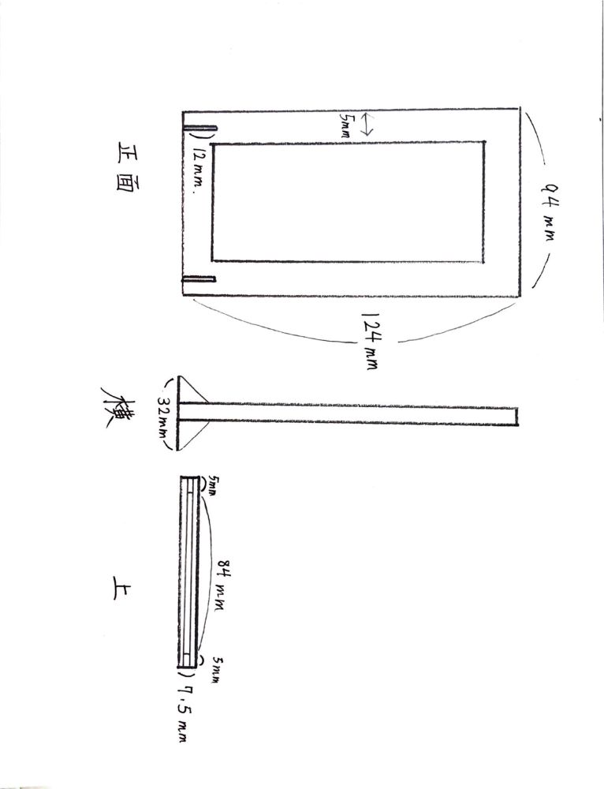
Adobe Illustratorを使って写真立てを形作る
制作した図面が下の写真です。
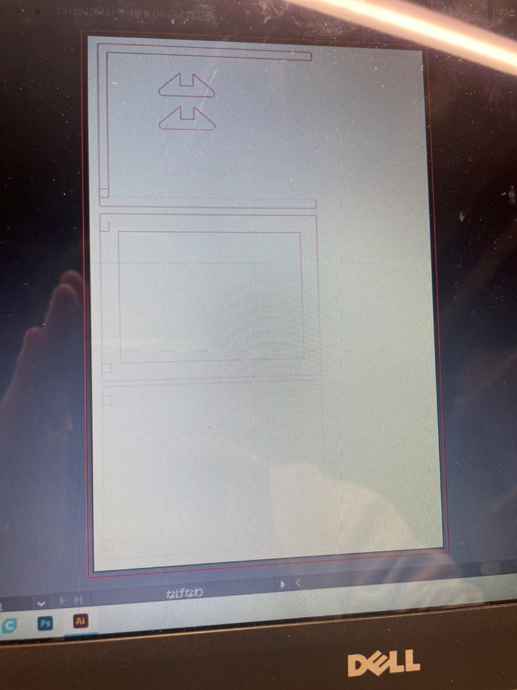
木材をカットする
↓↓木材をカットするとこんな感じ↓↓
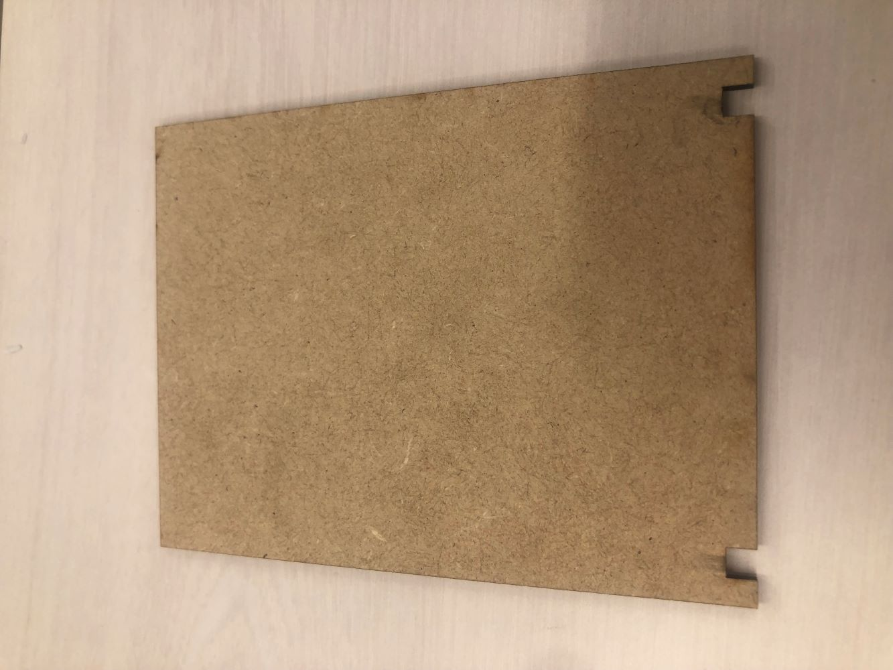 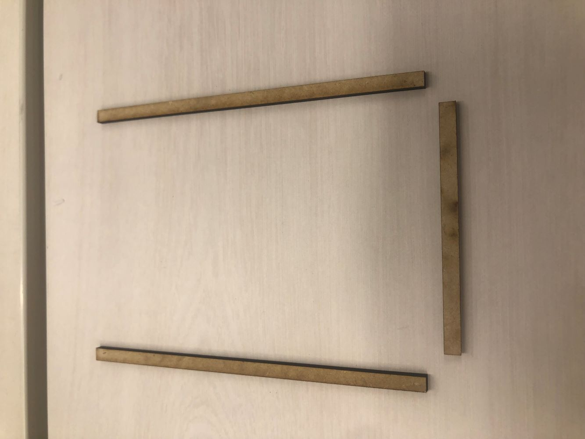
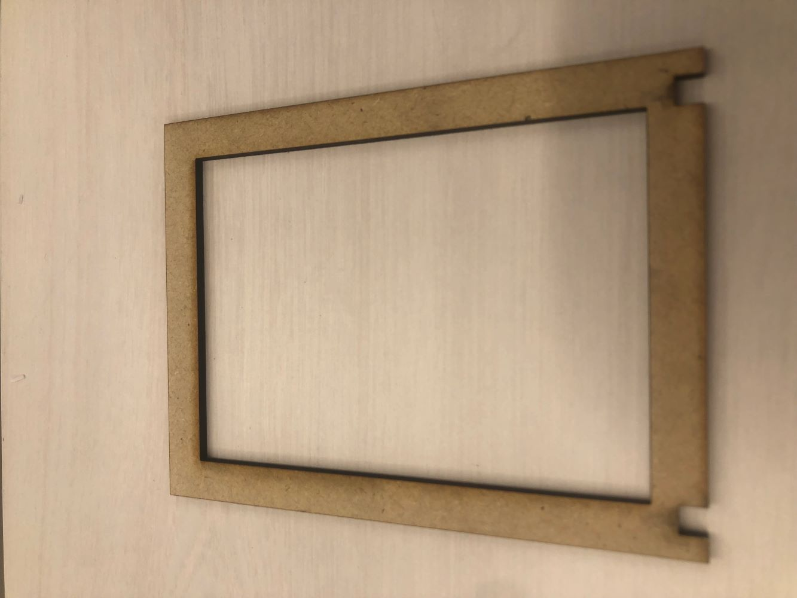 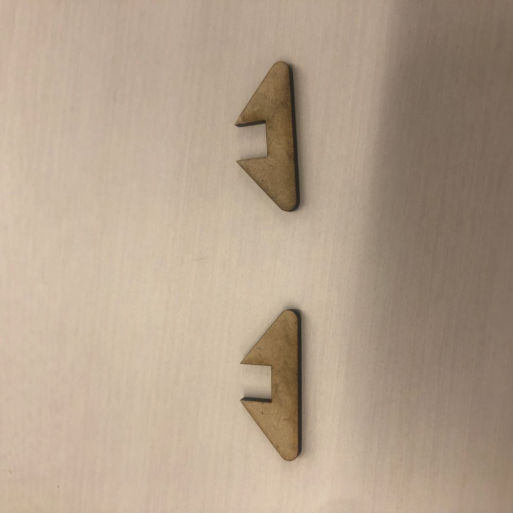
切り取った木材を組み立てる
木工用ボンドを使ってパーツを接着していきます
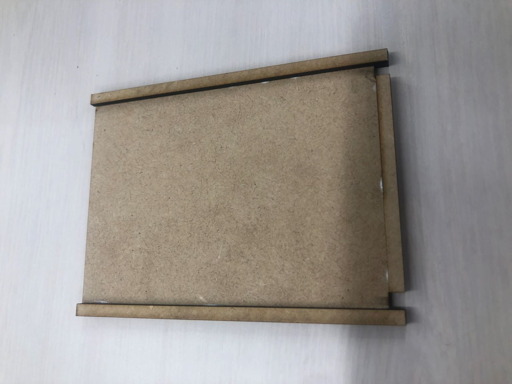 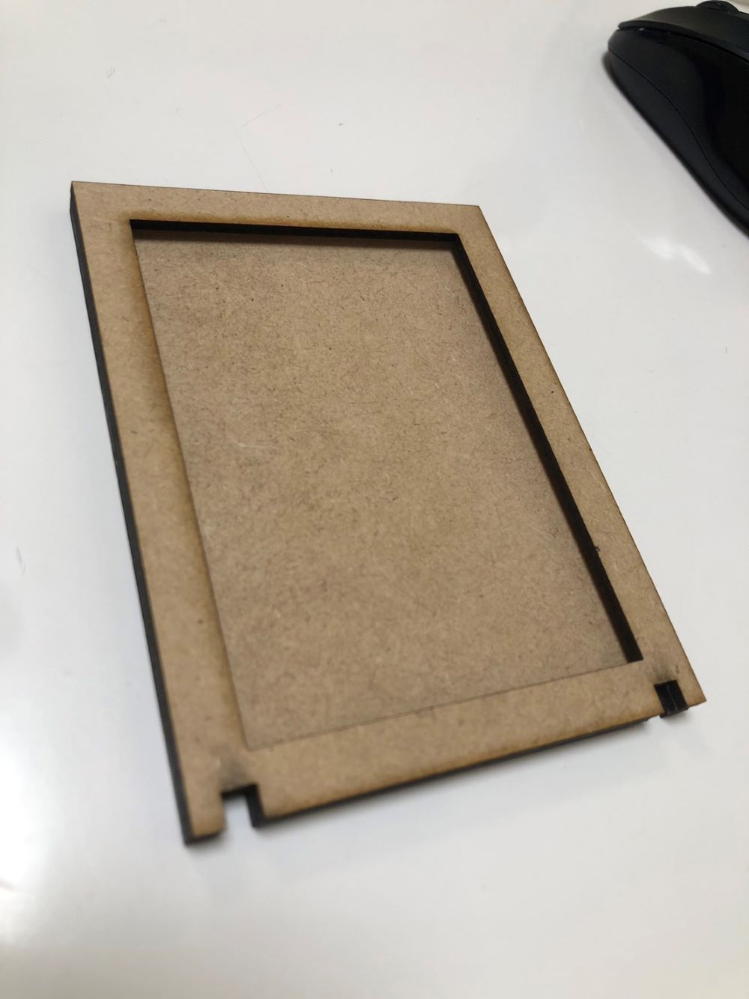
完成
自立用のパーツを溝にはめれば完成です
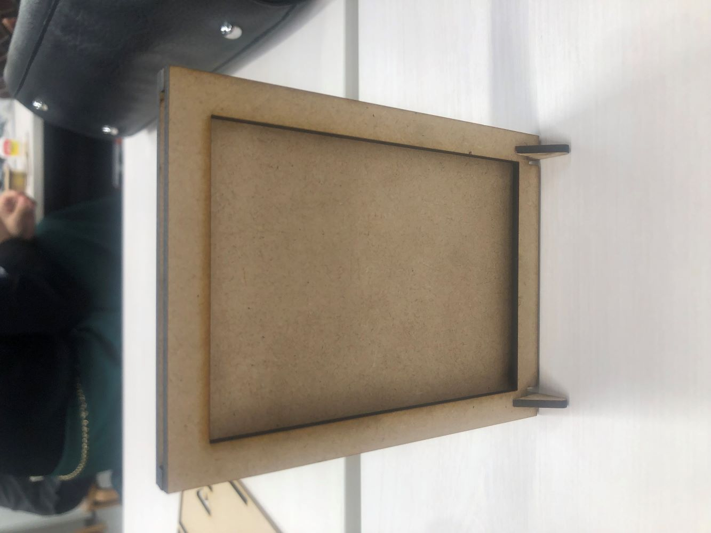 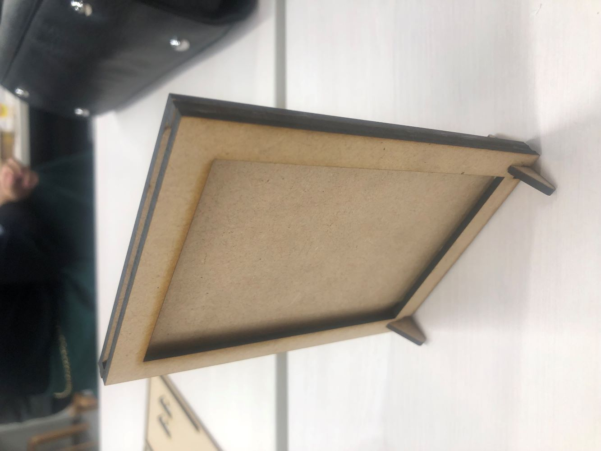
実際に使ってみた
なんの飾りもない木材の写真立てがいい具合にモップの可愛さを強調してくれていい感じです。
命名「シンプル写真立て」
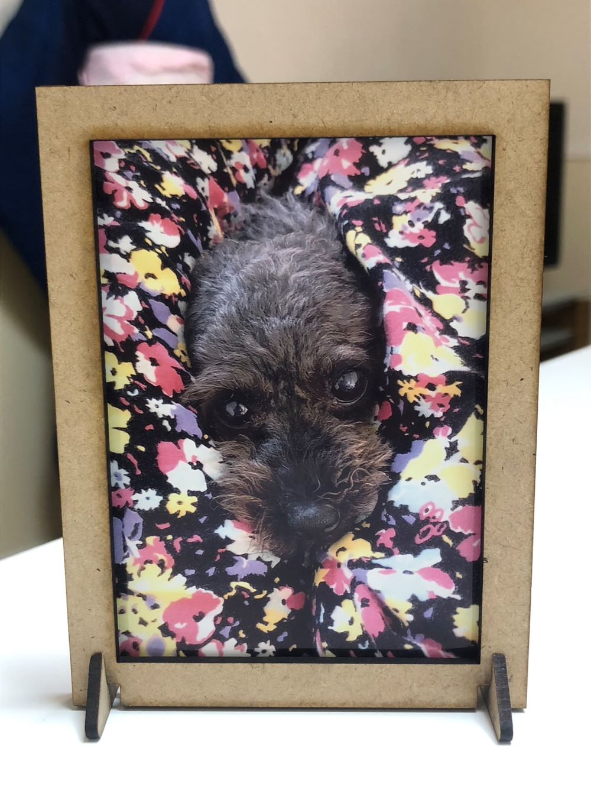 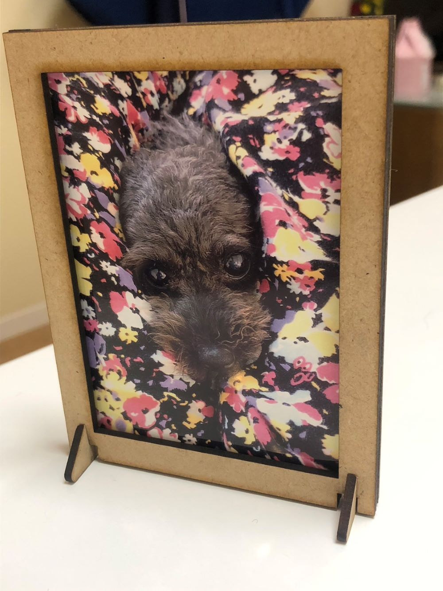
まとめ
今回私は自分と家族が感動するものを制作しました。市販の写真立てだと思ったように写真が納まらなかったり、余計なデザインが邪魔を
していたので制作を決めました。
反省としては、セブンイレブンのコピー機を使用したのですがネットで調べたサイズと実際のサイズが違う問題が発生しました。
なので次は実物のサイズをしっかりと自分で測ってから制作するようにします。